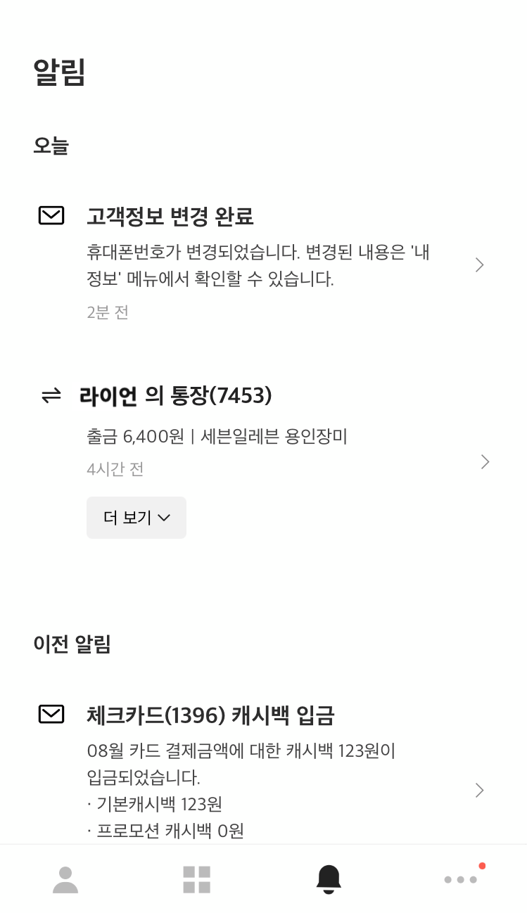
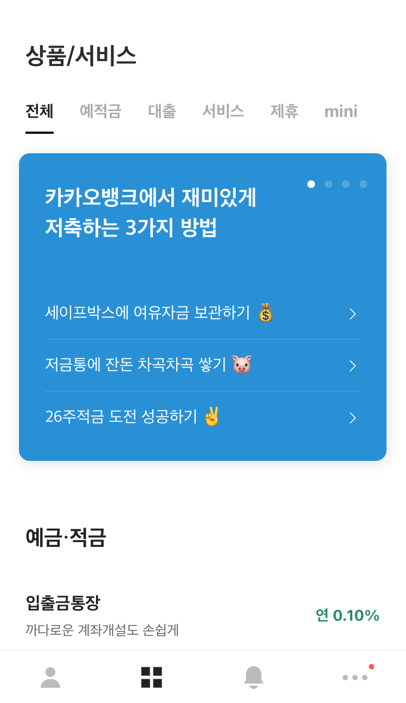
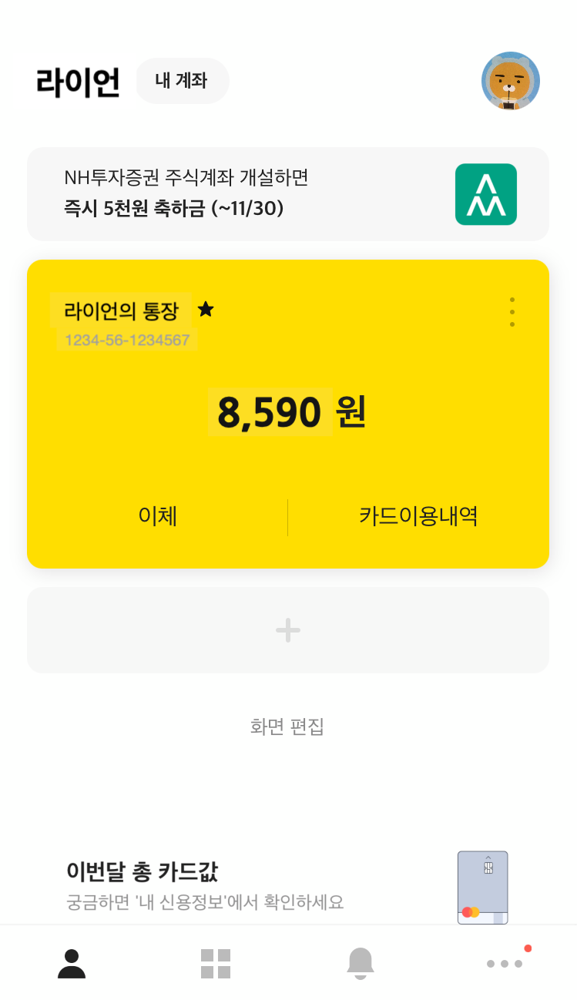
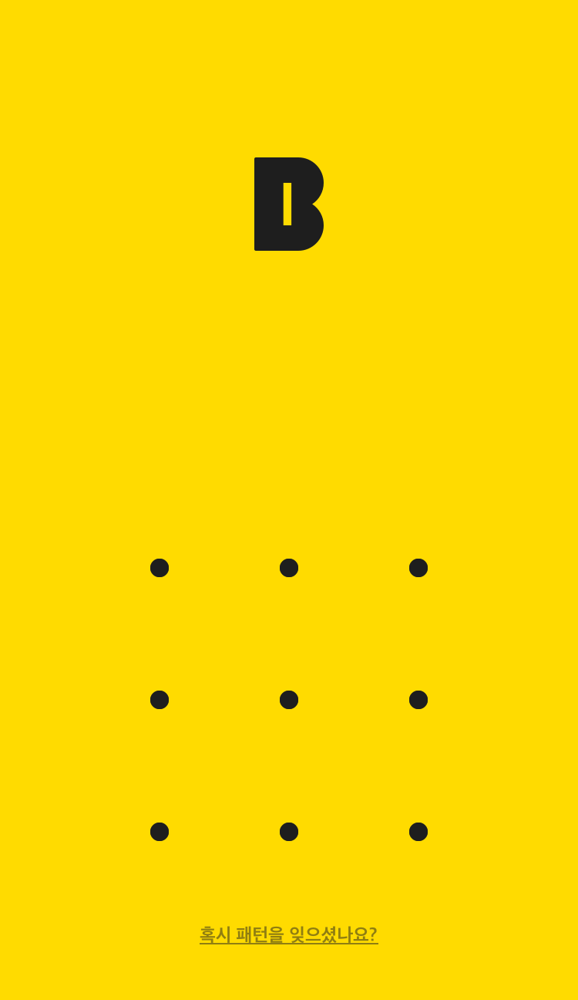

IT 기술로 카카오뱅크를 만들어갑니다
모바일로 더 손쉬운 계좌개설, 간편한 이체
번거로운 본인 인증 과정으로 불편했던 경험이 있나요?
카카오뱅크에서는 공인인증서, OTP없이 계좌 개설이 간편합니다.
여러 건의 이체도 몇 번의 터치로 손쉽게 보낼 수 있습니다.
카카오뱅크에서는 공인인증서, OTP없이 계좌 개설이 간편합니다.
여러 건의 이체도 몇 번의 터치로 손쉽게 보낼 수 있습니다.
우대조건없이 합리적인 예금과 적금
기대했던 금리와 다르게 복잡한 우대조건에 실망한 적이 있었나요?
카카오뱅크의 예금, 적금은 숨겨진 우대조건 없이
누구에게나 편리하고 합리적입니다.
카카오뱅크의 예금, 적금은 숨겨진 우대조건 없이
누구에게나 편리하고 합리적입니다.
함께 쓰고 같이 보는 모임통장
카카오톡 친구를 바로 모임통장으로 초대하고
친구들과 함께 잔액과 입출금 현황을 확인할 수 있습니다.
재미있는 메시지 카드로 회비 입금 요청도 해보세요.
친구들과 함께 잔액과 입출금 현황을 확인할 수 있습니다.
재미있는 메시지 카드로 회비 입금 요청도 해보세요.
해외계좌송금과 WU빠른해외송금을 더 쉽고, 저렴하게
해외계좌성곰이 가능한 22개국을 포함하여
전세계 200여개국으로
WU빠른해외송금이 가능합니다.
전세계 200여개국으로
WU빠른해외송금이 가능합니다.



